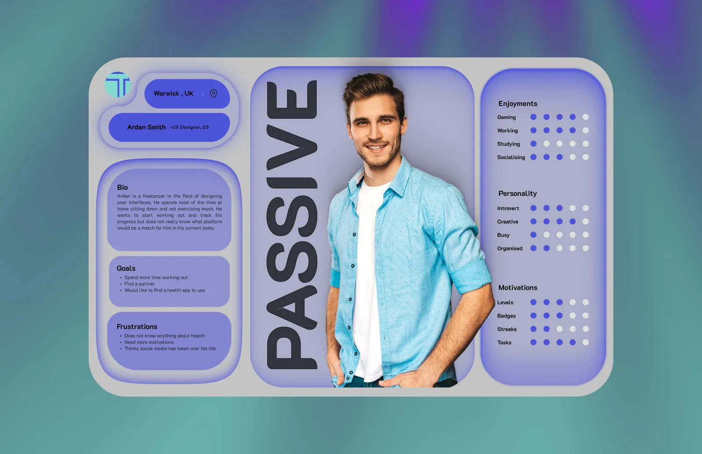
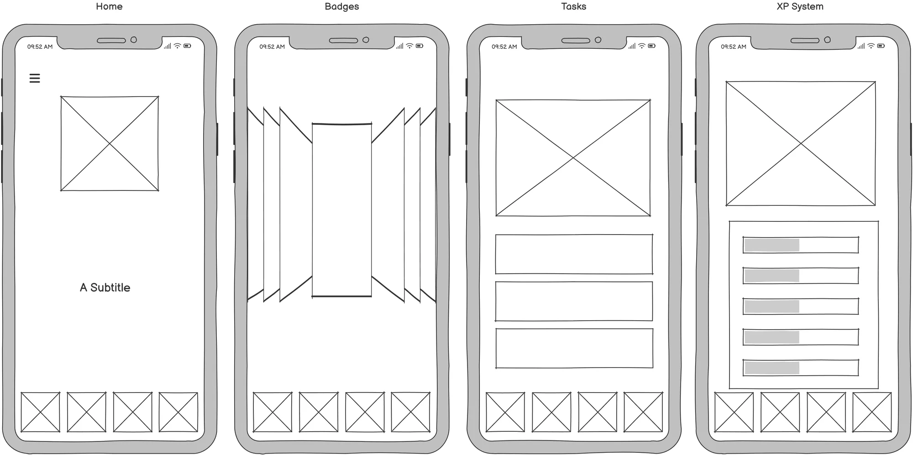
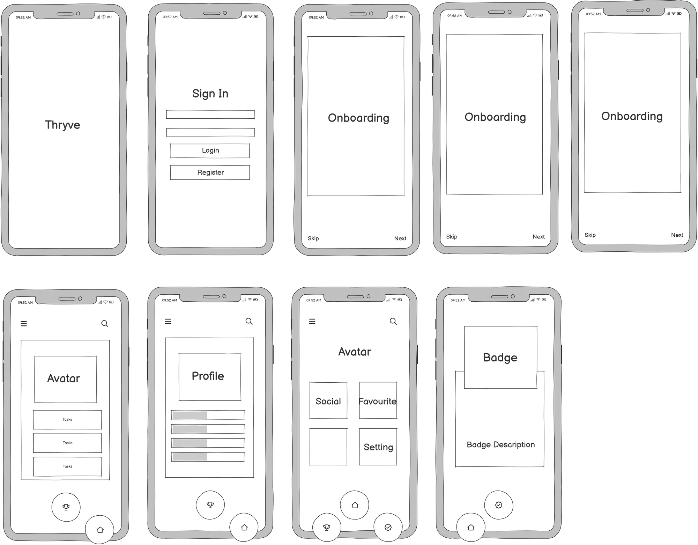
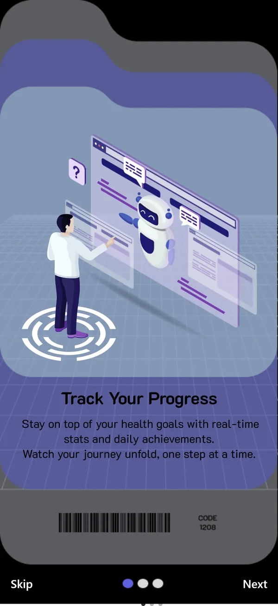
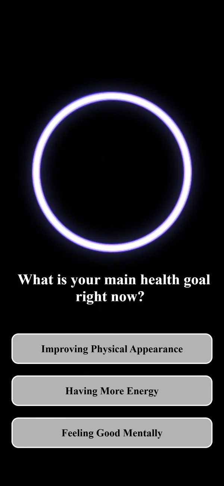
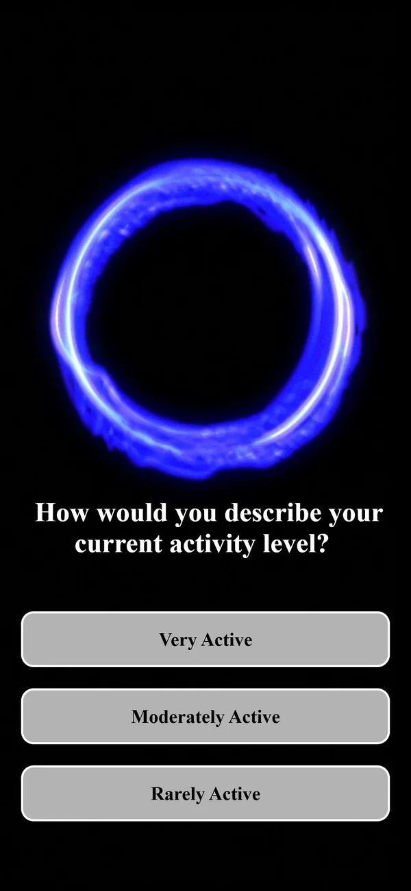
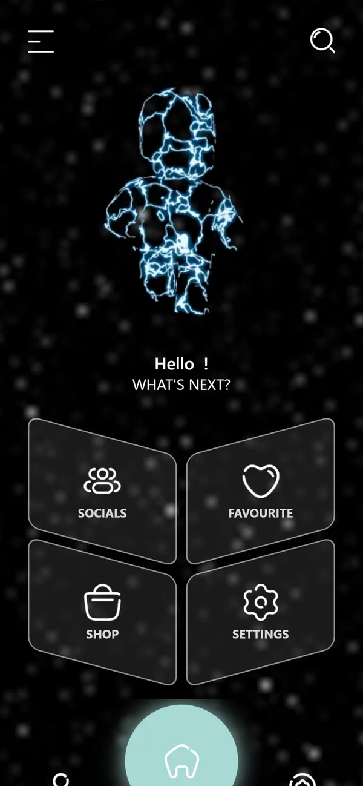
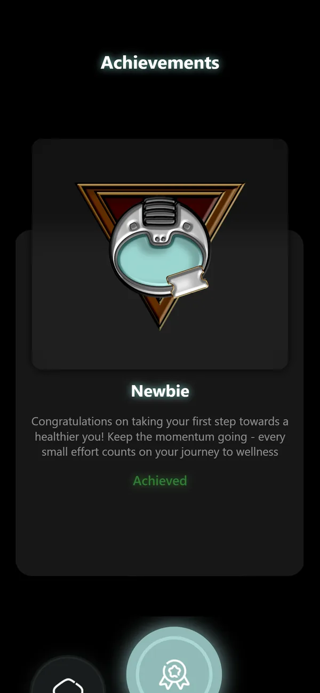

CASE STUDY 01 · MSC DISSERTATION
Thryve
A health app built like a game, for people who have already given up on health apps.

AT A GLANCE
01 / RESEARCH
Who drops out, and what would keep them
COMPETITOR
Strava
Built around competition. Great if you already run; a wall if you don't.
COMPETITOR
Fitbit
Tied to a device. The motivation lives in hardware you have to buy first.
COMPETITOR
Pokémon Go
Gets people walking, but health is a side effect, not the goal.
I surveyed 30 people, recruited through social media and department groups, in a three-part questionnaire. The results became two personas and set the options in the app's onboarding.
- 70% aged 18–24 (21 of 30)
- 1 in 3 used no wellbeing tool at all (10 of 30)
- 5 of 30 named competing as a reason to stay healthy
- Streaks15
- Badges and achievements15
- Levels and progress indicators12
- Time-limited challenges10
- Points for tasks10
- Feedback and notifications9
- Social sharing8
- Leaderboard5
- Custom profiles and avatars4
Streaks and badges tied at the top (highlighted); leaderboards came second to last. Competition ranked low for this audience.


(opens full size)From answers to onboarding
The three biggest reasons people gave for staying healthy — improving physical appearance (21), having more energy (18) and feeling good mentally (17) — became the answers to the onboarding question "What is your main health goal right now?"
Two theories framed the rest: Self-Determination Theory for why people keep going, and Maslow's hierarchy as the backbone for how XP is earned. I also used Fanfarelli and Harden's three types of badge, and the line between playfulness and gamefulness.
02 / PRINCIPLES
An app with game elements, not a game
That direction came from my supervisor. I wrote it down as a manifesto so every later decision had something to be checked against.
-
01
Rest is never punished
You aren't punished for resting. You win when you come back.
-
02
A glass of water counts
Stretching, a glass of water, standing up from your desk: every effort counts, and consistency beats perfection.
-
03
Play, not competition
The point is to enjoy getting better, not to beat someone else.
03 / STRUCTURE
Two rounds of wireframes, one user flow


(opens full size)

(opens full size)
04 / THE SYSTEM
Five tracks, one level, badges that grow

Health as a stat sheet
Hydration, Nutrition, Rest, Sunlight and Habits each level up on their own, and together they feed one overall level and XP total. Each track keeps its own colour so you can tell them apart at a glance, and every bar carries its level as text, not colour alone.
| Track | Colour | Level |
|---|---|---|
| Hydration | Cyan | 2 |
| Nutrition | Green | 2 |
| Rest | Purple | 5 |
| Sunlight | Yellow | 1 |
| Habits | Orange | 1 |
The badge rule: every level adds a corner
One rule anyone on a team could apply to a new badge without asking me. The shape tells you the tier before you read a word.
-
STAGE 1 · BRONZE · 3 CORNERS
A robot with no eyes, holding a ticket: you've just walked in.
-
STAGE 2 · SILVER · 4 CORNERS
The robot opens its eyes.
-
STAGE 3 · GOLD · 5 CORNERS
A gold outline appears around the robot.
-
STAGE 4 · GOLD · 6 CORNERS
The robot earns a crown.
All four badges modelled in Blender.
FEEDBACK ROUND 1
My first emblem badges read as "militaristic". I scrapped the set and rebuilt it around a robot character, and moved the avatar from a realistic human to a stylised humanoid.
FEEDBACK ROUND 2
People said the first-login and one-week badges looked like they belonged to a different set. I gave them the same metal rim and colours as the rest.


05 / BUILD
When the prototype can't answer, build it
Figma couldn't test real input, and without a Mac I couldn't use Swift. So I learned mobile development and built Thryve in React Native, with Appwrite handling sign-up and authentication. Most of the design work in this phase was negotiating with the engine.
| CONSTRAINT | DESIGN RESPONSE |
|---|---|
| React Native only loads .glb models, which dropped my Blender textures | Rendered the avatar animations out as video and embedded them |
| Expo Go can't show 3D on a device | Gave up on on-device 3D previews |
| expo-video couldn't hide its playback controls | Switched to the legacy expo-av player so the animations play without visible controls |

(opens full size)
(opens full size)
(opens full size)
(opens full size)
(opens full size)